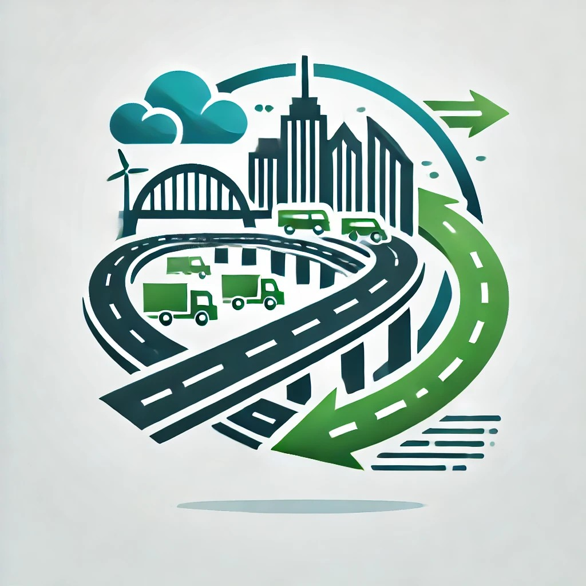

UrbanEase-A Treasure of Solutions
Blind Spot Detection Systems are advanced safety features designed to enhance driver awareness and prevent accidents caused by unseen vehicles in adjacent lanes. These systems use a combination of radar, cameras, and ultrasonic sensors to monitor areas around the vehicle that are typically outside the driver's field of vision. When a vehicle enters the blind spot, the system provides visual and auditory alerts, such as warning lights and beeps, to notify the driver. By alerting drivers to potential hazards, blind spot detection systems significantly reduce the risk of lane-change collisions and other accidents. These technologies are integrated into modern vehicles as part of Advanced Driver Assistance Systems (ADAS), contributing to overall road safety and helping to prevent thousands of accidents each year.
Smart Parking Systems are transforming urban parking experiences by leveraging advanced technologies to optimize parking space utilization, reduce congestion, and enhance road safety. These systems use a combination of IoT sensors, real-time data analytics, mobile applications, and automated payment solutions to provide a seamless parking experience. IoT Sensors: Installed in parking spaces to detect occupancy status. Communicate real-time availability data to the central system. Real-Time Data Analytics: Analyzes data from IoT sensors and other sources to predict parking availability. Provides users with real-time updates on available parking spots. Automated Payment Solutions: Enable cashless transactions through mobile apps or RFID tags. Streamline the payment process, reducing the time spent in parking lots. Real-World Impact: Reduced Traffic Congestion: Drivers spend less time searching for parking, reducing traffic volume and congestion in urban areas. Efficient parking management leads to smoother traffic flow and less gridlock. Enhanced Safety: Minimizes the risk of accidents caused by drivers circling streets looking for parking. Clear guidance and real-time updates prevent sudden stops and turns, improving road safety.